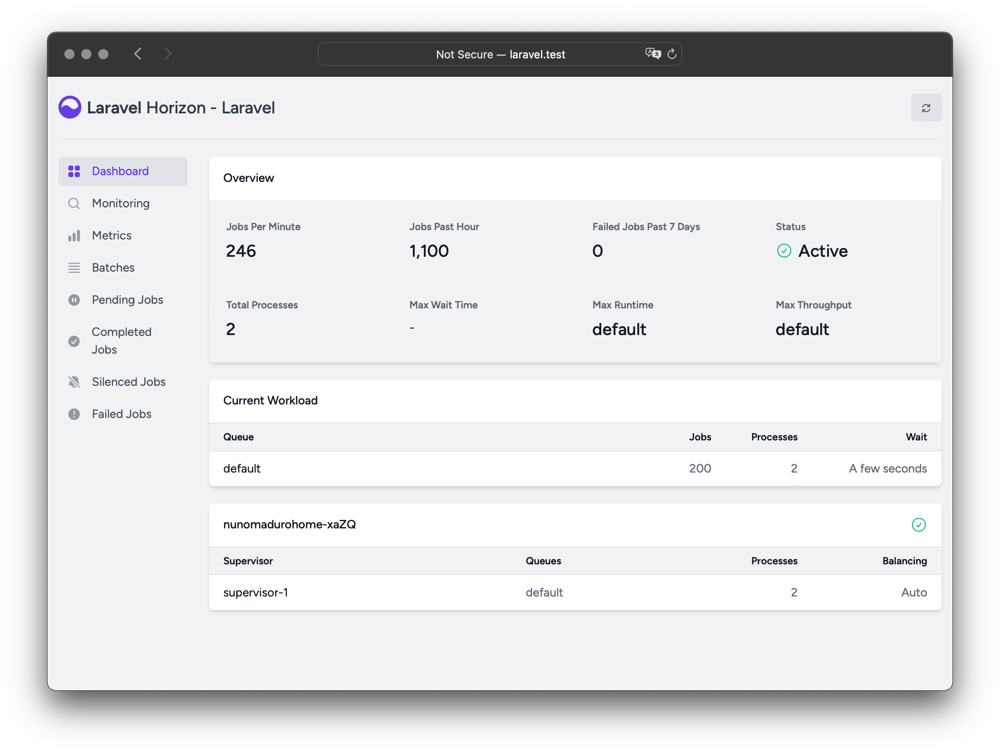

Laravel Horizon
- Introduction
- Installation
- Balancing Strategies
- Upgrading Horizon
- Running Horizon
- Tags
- Notifications
- Metrics
- Deleting Failed Jobs
- Clearing Jobs From Queues
Introduction
Before digging into Laravel Horizon, you should familiarize yourself with Laravel's base queue services. Horizon augments Laravel's queue with additional features that may be confusing if you are not already familiar with the basic queue features offered by Laravel.
Laravel Horizon provides a beautiful dashboard and code-driven configuration for your Laravel powered Redis queues. Horizon allows you to easily monitor key metrics of your queue system such as job throughput, runtime, and job failures.
When using Horizon, all of your queue worker configuration is stored in a single, simple configuration file. By defining your application's worker configuration in a version controlled file, you may easily scale or modify your application's queue workers when deploying your application.

Installation
Laravel Horizon requires that you use Redis to power your queue. Therefore, you should ensure that your queue connection is set to redis in your application's config/queue.php configuration file. Horizon is not compatible with Redis Cluster at this time.
You may install Horizon into your project using the Composer package manager:
1composer require laravel/horizonAfter installing Horizon, publish its assets using the horizon:install Artisan command:
1php artisan horizon:installConfiguration
After publishing Horizon's assets, its primary configuration file will be located at config/horizon.php. This configuration file allows you to configure the queue worker options for your application. Each configuration option includes a description of its purpose, so be sure to thoroughly explore this file.
Horizon uses a Redis connection named horizon internally. This Redis connection name is reserved and should not be assigned to another Redis connection in the database.php configuration file or as the value of the use option in the horizon.php configuration file.
Environments
After installation, the primary Horizon configuration option that you should familiarize yourself with is the environments configuration option. This configuration option is an array of environments that your application runs on and defines the worker process options for each environment. By default, this entry contains a production and local environment. However, you are free to add more environments as needed:
1'environments' => [ 2 'production' => [ 3 'supervisor-1' => [ 4 'maxProcesses' => 10, 5 'balanceMaxShift' => 1, 6 'balanceCooldown' => 3, 7 ], 8 ], 9 10 'local' => [11 'supervisor-1' => [12 'maxProcesses' => 3,13 ],14 ],15],You may also define a wildcard environment (*) which will be used when no other matching environment is found:
1'environments' => [2 // ...3 4 '*' => [5 'supervisor-1' => [6 'maxProcesses' => 3,7 ],8 ],9],When you start Horizon, it will use the worker process configuration options for the environment that your application is running on. Typically, the environment is determined by the value of the APP_ENV environment variable. For example, the default local Horizon environment is configured to start three worker processes and automatically balance the number of worker processes assigned to each queue. The default production environment is configured to start a maximum of 10 worker processes and automatically balance the number of worker processes assigned to each queue.
You should ensure that the environments portion of your horizon configuration file contains an entry for each environment on which you plan to run Horizon.
Supervisors
As you can see in Horizon's default configuration file, each environment can contain one or more "supervisors". By default, the configuration file defines this supervisor as supervisor-1; however, you are free to name your supervisors whatever you want. Each supervisor is essentially responsible for "supervising" a group of worker processes and takes care of balancing worker processes across queues.
You may add additional supervisors to a given environment if you would like to define a new group of worker processes that should run in that environment. You may choose to do this if you would like to define a different balancing strategy or worker process count for a given queue used by your application.
Maintenance Mode
While your application is in maintenance mode, queued jobs will not be processed by Horizon unless the supervisor's force option is defined as true within the Horizon configuration file:
1'environments' => [2 'production' => [3 'supervisor-1' => [4 // ...5 'force' => true,6 ],7 ],8],Default Values
Within Horizon's default configuration file, you will notice a defaults configuration option. This configuration option specifies the default values for your application's supervisors. The supervisor's default configuration values will be merged into the supervisor's configuration for each environment, allowing you to avoid unnecessary repetition when defining your supervisors.
Dashboard Authorization
The Horizon dashboard may be accessed via the /horizon route. By default, you will only be able to access this dashboard in the local environment. However, within your app/Providers/HorizonServiceProvider.php file, there is an authorization gate definition. This authorization gate controls access to Horizon in non-local environments. You are free to modify this gate as needed to restrict access to your Horizon installation:
1/** 2 * Register the Horizon gate. 3 * 4 * This gate determines who can access Horizon in non-local environments. 5 */ 6protected function gate(): void 7{ 8 Gate::define('viewHorizon', function (User $user) { 9 return in_array($user->email, [11 ]);12 });13}Alternative Authentication Strategies
Remember that Laravel automatically injects the authenticated user into the gate closure. If your application is providing Horizon security via another method, such as IP restrictions, then your Horizon users may not need to "login". Therefore, you will need to change function (User $user) closure signature above to function (User $user = null) in order to force Laravel to not require authentication.
Max Job Attempts
Before refining these options, make sure you are familiar with Laravel's default queue services and the concept of 'attempts'.
You can define the maximum number of attempts a job can consume within a supervisor's configuration:
1'environments' => [2 'production' => [3 'supervisor-1' => [4 // ...5 'tries' => 10,6 ],7 ],8],
This option is similar to the --tries option when using the Artisan command to process queues.
Adjusting the tries option is essential when using middlewares such as WithoutOverlapping or RateLimited because they consume attempts. To handle this, adjust the tries configuration value either at the supervisor level or by defining the $tries property on the job class.
If you don't set the tries option, Horizon defaults to a single attempt, unless the job class defines $tries, which takes precedence over the Horizon configuration.
Setting tries or $tries to 0 allows unlimited attempts, which is ideal when the number of attempts is uncertain. To prevent endless failures, you can limit the number of exceptions allowed by setting the $maxExceptions property on the job class.
Job Timeout
Similarly, you can set a timeout value at the supervisor level, which specifies how many seconds a worker process can run a job before it's forcefully terminated. Once terminated, the job will either be retried or marked as failed, depending on your queue configuration:
1'environments' => [2 'production' => [3 'supervisor-1' => [4 // ...¨5 'timeout' => 60,6 ],7 ],8],
When using the auto balancing strategy, Horizon will consider in-progress workers as "hanging" and force-kill them after the Horizon timeout during scale down. Always ensure the Horizon timeout is greater than any job-level timeout, otherwise jobs may be terminated mid-execution. In addition, the timeout value should always be at least a few seconds shorter than the retry_after value defined in your config/queue.php configuration file. Otherwise, your jobs may be processed twice.
Job Backoff
You can define the backoff value at the supervisor level to specify how long Horizon should wait before retrying a job that encounters an unhandled exception:
1'environments' => [2 'production' => [3 'supervisor-1' => [4 // ...5 'backoff' => 10,6 ],7 ],8],You may also configure "exponential" backoffs by using an array for the backoff value. In this example, the retry delay will be 1 second for the first retry, 5 seconds for the second retry, 10 seconds for the third retry, and 10 seconds for every subsequent retry if there are more attempts remaining:
1'environments' => [2 'production' => [3 'supervisor-1' => [4 // ...5 'backoff' => [1, 5, 10],6 ],7 ],8],Silenced Jobs
Sometimes, you may not be interested in viewing certain jobs dispatched by your application or third-party packages. Instead of these jobs taking up space in your "Completed Jobs" list, you can silence them. To get started, add the job's class name to the silenced configuration option in your application's horizon configuration file:
1'silenced' => [2 App\Jobs\ProcessPodcast::class,3],In addition to silencing individual job classes, Horizon also supports silencing jobs based on tags. This can be useful if you want to hide multiple jobs that share a common tag:
1'silenced_tags' => [2 'notifications'3],Alternatively, the job you wish to silence can implement the Laravel\Horizon\Contracts\Silenced interface. If a job implements this interface, it will automatically be silenced, even if it is not present in the silenced configuration array:
1use Laravel\Horizon\Contracts\Silenced;2 3class ProcessPodcast implements ShouldQueue, Silenced4{5 use Queueable;6 7 // ...8}Balancing Strategies
Each supervisor can process one or more queues but unlike Laravel's default queue system, Horizon allows you to choose from three worker balancing strategies: auto, simple, and false.
Auto Balancing
The auto strategy, which is the default strategy, adjusts the number of worker processes per queue based on the current workload of the queue. For example, if your notifications queue has 1,000 pending jobs while your default queue is empty, Horizon will allocate more workers to your notifications queue until the queue is empty.
When using the auto strategy, you may also configure the minProcesses and maxProcesses configuration options:
minProcessesdefines the minimum number of worker processes per queue. This value must be greater than or equal to 1.maxProcessesdefines the maximum total number of worker processes Horizon may scale up to across all queues. This value should typically be greater than the number of queues multiplied by theminProcessesvalue. To prevent the supervisor from spawning any processes, you may set this value to 0.
For example, you may configure Horizon to maintain at least one process per queue and scale up to a total of 10 worker processes:
1'environments' => [ 2 'production' => [ 3 'supervisor-1' => [ 4 'connection' => 'redis', 5 'queue' => ['default', 'notifications'], 6 'balance' => 'auto', 7 'autoScalingStrategy' => 'time', 8 'minProcesses' => 1, 9 'maxProcesses' => 10,10 'balanceMaxShift' => 1,11 'balanceCooldown' => 3,12 ],13 ],14],The autoScalingStrategy configuration option determines how Horizon will assign more worker processes to queues. You can choose between two strategies:
- The
timestrategy will assign workers based on the total estimated amount of time it will take to clear the queue. - The
sizestrategy will assign workers based on the total number of jobs on the queue.
The balanceMaxShift and balanceCooldown configuration values determine how quickly Horizon will scale to meet worker demand. In the example above, a maximum of one new process will be created or destroyed every three seconds. You are free to tweak these values as necessary based on your application's needs.
Queue Priorities and Auto Balancing
When using the auto balancing strategy, Horizon does not enforce strict priority between queues. The order of queues in a supervisor's configuration does not affect how worker processes are assigned. Instead, Horizon relies on the selected autoScalingStrategy to dynamically allocate worker processes based on queue load.
For example, in the following configuration, the high queue is not prioritized over the default queue, despite appearing first in the list:
1'environments' => [ 2 'production' => [ 3 'supervisor-1' => [ 4 // ... 5 'queue' => ['high', 'default'], 6 'minProcesses' => 1, 7 'maxProcesses' => 10, 8 ], 9 ],10],If you need to enforce a relative priority between queues, you may define multiple supervisors and explicitly allocate processing resources:
1'environments' => [ 2 'production' => [ 3 'supervisor-1' => [ 4 // ... 5 'queue' => ['default'], 6 'minProcesses' => 1, 7 'maxProcesses' => 10, 8 ], 9 'supervisor-2' => [10 // ...11 'queue' => ['images'],12 'minProcesses' => 1,13 'maxProcesses' => 1,14 ],15 ],16],In this example, the default queue can scale up to 10 processes, while the images queue is limited to one process. This configuration ensures that your queues can scale independently.
When dispatching resource-intensive jobs, it's sometimes best to assign them to a dedicated queue with a limited maxProcesses value. Otherwise, these jobs could consume excessive CPU resources and overload your system.
Simple Balancing
The simple strategy distributes worker processes evenly across the specified queues. With this strategy, Horizon does not automatically scale the number of worker processes. Rather, it uses a fixed number of processes:
1'environments' => [ 2 'production' => [ 3 'supervisor-1' => [ 4 // ... 5 'queue' => ['default', 'notifications'], 6 'balance' => 'simple', 7 'processes' => 10, 8 ], 9 ],10],In the example above, Horizon will assign 5 processes to each queue, splitting the total of 10 evenly.
If you'd like to control the number of worker processes assigned to each queue individually, you can define multiple supervisors:
1'environments' => [ 2 'production' => [ 3 'supervisor-1' => [ 4 // ... 5 'queue' => ['default'], 6 'balance' => 'simple', 7 'processes' => 10, 8 ], 9 'supervisor-notifications' => [10 // ...11 'queue' => ['notifications'],12 'balance' => 'simple',13 'processes' => 2,14 ],15 ],16],With this configuration, Horizon will assign 10 processes to the default queue and 2 processes to the notifications queue.
No Balancing
When the balance option is set to false, Horizon processes queues strictly in the order they're listed, similar to Laravel's default queue system. However, it will still scale the number of worker processes if jobs begin to accumulate:
1'environments' => [ 2 'production' => [ 3 'supervisor-1' => [ 4 // ... 5 'queue' => ['default', 'notifications'], 6 'balance' => false, 7 'minProcesses' => 1, 8 'maxProcesses' => 10, 9 ],10 ],11],In the example above, jobs in the default queue are always prioritized over jobs in the notifications queue. For instance, if there are 1,000 jobs in default and only 10 in notifications, Horizon will fully process all default jobs before handling any from notifications.
You can control Horizon's ability to scale worker processes using the minProcesses and maxProcesses options:
minProcessesdefines the minimum number of worker processes in total. This value must be greater than or equal to 1.maxProcessesdefines the maximum total number of worker processes Horizon may scale up to.
Upgrading Horizon
When upgrading to a new major version of Horizon, it's important that you carefully review the upgrade guide.
Running Horizon
Once you have configured your supervisors and workers in your application's config/horizon.php configuration file, you may start Horizon using the horizon Artisan command. This single command will start all of the configured worker processes for the current environment:
1php artisan horizonYou may pause the Horizon process and instruct it to continue processing jobs using the horizon:pause and horizon:continue Artisan commands:
1php artisan horizon:pause2 3php artisan horizon:continueYou may also pause and continue specific Horizon supervisors using the horizon:pause-supervisor and horizon:continue-supervisor Artisan commands:
1php artisan horizon:pause-supervisor supervisor-12 3php artisan horizon:continue-supervisor supervisor-1You may check the current status of the Horizon process using the horizon:status Artisan command:
1php artisan horizon:statusYou may check the current status of a specific Horizon supervisor using the horizon:supervisor-status Artisan command:
1php artisan horizon:supervisor-status supervisor-1You may gracefully terminate the Horizon process using the horizon:terminate Artisan command. Any jobs that are currently being processed will be completed and then Horizon will stop executing:
1php artisan horizon:terminateAutomatically Restarting Horizon
During local development, you may run the horizon:listen command. When using the horizon:listen command, you don't have to manually restart Horizon when you want to reload your updated code. Before using this feature, you should ensure that Node is installed within your local development environment. In addition, you should install the Chokidar file-watching library within your project:
1npm install --save-dev chokidarOnce Chokidar is installed, you may start Horizon using the horizon:listen command:
1php artisan horizon:listenWhen running within Docker or Vagrant, you should use the --poll option:
1php artisan horizon:listen --pollYou may configure the directories and files that should be watched using the watch configuration option within your application's config/horizon.php configuration file:
1'watch' => [ 2 'app', 3 'bootstrap', 4 'config', 5 'database', 6 'public/**/*.php', 7 'resources/**/*.php', 8 'routes', 9 'composer.lock',10 '.env',11],Deploying Horizon
When you're ready to deploy Horizon to your application's actual server, you should configure a process monitor to monitor the php artisan horizon command and restart it if it exits unexpectedly. Don't worry, we'll discuss how to install a process monitor below.
During your application's deployment process, you should instruct the Horizon process to terminate so that it will be restarted by your process monitor and receive your code changes:
1php artisan horizon:terminateInstalling Supervisor
Supervisor is a process monitor for the Linux operating system and will automatically restart your horizon process if it stops executing. To install Supervisor on Ubuntu, you may use the following command. If you are not using Ubuntu, you can likely install Supervisor using your operating system's package manager:
1sudo apt-get install supervisorIf configuring Supervisor yourself sounds overwhelming, consider using Laravel Cloud, which can manage background processes for your Laravel applications.
Supervisor Configuration
Supervisor configuration files are typically stored within your server's /etc/supervisor/conf.d directory. Within this directory, you may create any number of configuration files that instruct supervisor how your processes should be monitored. For example, let's create a horizon.conf file that starts and monitors a horizon process:
1[program:horizon]2process_name=%(program_name)s3command=php /home/forge/example.com/artisan horizon4autostart=true5autorestart=true6user=forge7redirect_stderr=true8stdout_logfile=/home/forge/example.com/horizon.log9stopwaitsecs=3600When defining your Supervisor configuration, you should ensure that the value of stopwaitsecs is greater than the number of seconds consumed by your longest running job. Otherwise, Supervisor may kill the job before it is finished processing.
While the examples above are valid for Ubuntu based servers, the location and file extension expected of Supervisor configuration files may vary between other server operating systems. Please consult your server's documentation for more information.
Starting Supervisor
Once the configuration file has been created, you may update the Supervisor configuration and start the monitored processes using the following commands:
1sudo supervisorctl reread2 3sudo supervisorctl update4 5sudo supervisorctl start horizonFor more information on running Supervisor, consult the Supervisor documentation.
Tags
Horizon allows you to assign "tags" to jobs, including mailables, broadcast events, notifications, and queued event listeners. In fact, Horizon will intelligently and automatically tag most jobs depending on the Eloquent models that are attached to the job. For example, take a look at the following job:
1<?php 2 3namespace App\Jobs; 4 5use App\Models\Video; 6use Illuminate\Contracts\Queue\ShouldQueue; 7use Illuminate\Foundation\Queue\Queueable; 8 9class RenderVideo implements ShouldQueue10{11 use Queueable;12 13 /**14 * Create a new job instance.15 */16 public function __construct(17 public Video $video,18 ) {}19 20 /**21 * Execute the job.22 */23 public function handle(): void24 {25 // ...26 }27}If this job is queued with an App\Models\Video instance that has an id attribute of 1, it will automatically receive the tag App\Models\Video:1. This is because Horizon will search the job's properties for any Eloquent models. If Eloquent models are found, Horizon will intelligently tag the job using the model's class name and primary key:
1use App\Jobs\RenderVideo;2use App\Models\Video;3 4$video = Video::find(1);5 6RenderVideo::dispatch($video);Manually Tagging Jobs
If you would like to manually define the tags for one of your queueable objects, you may define a tags method on the class:
1class RenderVideo implements ShouldQueue 2{ 3 /** 4 * Get the tags that should be assigned to the job. 5 * 6 * @return array<int, string> 7 */ 8 public function tags(): array 9 {10 return ['render', 'video:'.$this->video->id];11 }12}Manually Tagging Event Listeners
When retrieving the tags for a queued event listener, Horizon will automatically pass the event instance to the tags method, allowing you to add event data to the tags:
1class SendRenderNotifications implements ShouldQueue 2{ 3 /** 4 * Get the tags that should be assigned to the listener. 5 * 6 * @return array<int, string> 7 */ 8 public function tags(VideoRendered $event): array 9 {10 return ['video:'.$event->video->id];11 }12}Notifications
When configuring Horizon to send Slack or SMS notifications, you should review the prerequisites for the relevant notification channel.
If you would like to be notified when one of your queues has a long wait time, you may use the Horizon::routeMailNotificationsTo, Horizon::routeSlackNotificationsTo, and Horizon::routeSmsNotificationsTo methods. You may call these methods from the boot method of your application's App\Providers\HorizonServiceProvider:
1/** 2 * Bootstrap any application services. 3 */ 4public function boot(): void 5{ 6 parent::boot(); 7 8 Horizon::routeSmsNotificationsTo('15556667777');10 Horizon::routeSlackNotificationsTo('slack-webhook-url', '#channel');11}Configuring Notification Wait Time Thresholds
You may configure how many seconds are considered a "long wait" within your application's config/horizon.php configuration file. The waits configuration option within this file allows you to control the long wait threshold for each connection / queue combination. Any undefined connection / queue combinations will default to a long wait threshold of 60 seconds:
1'waits' => [2 'redis:critical' => 30,3 'redis:default' => 60,4 'redis:batch' => 120,5],Setting a queue's threshold to 0 will disable long wait notifications for that queue.
Metrics
Horizon includes a metrics dashboard which provides information regarding your job and queue wait times and throughput. In order to populate this dashboard, you should configure Horizon's snapshot Artisan command to run every five minutes in your application's routes/console.php file:
1use Illuminate\Support\Facades\Schedule;2 3Schedule::command('horizon:snapshot')->everyFiveMinutes();If you would like to delete all metric data, you can invoke the horizon:clear-metrics Artisan command:
1php artisan horizon:clear-metricsDeleting Failed Jobs
If you would like to delete a failed job, you may use the horizon:forget command. The horizon:forget command accepts the ID or UUID of the failed job as its only argument:
1php artisan horizon:forget 5If you would like to delete all failed jobs, you may provide the --all option to the horizon:forget command:
1php artisan horizon:forget --allClearing Jobs From Queues
If you would like to delete all jobs from your application's default queue, you may do so using the horizon:clear Artisan command:
1php artisan horizon:clearYou may provide the queue option to delete jobs from a specific queue:
1php artisan horizon:clear --queue=emails